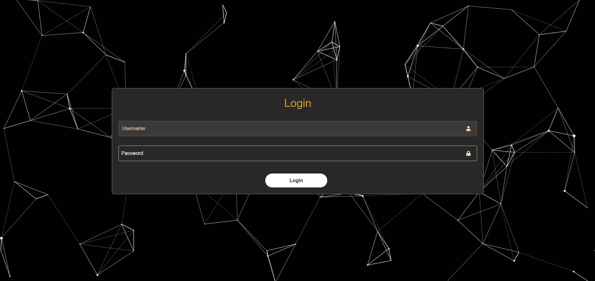
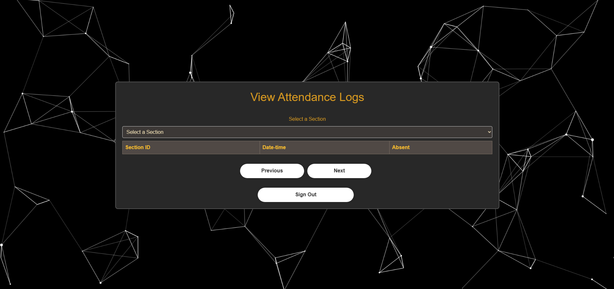
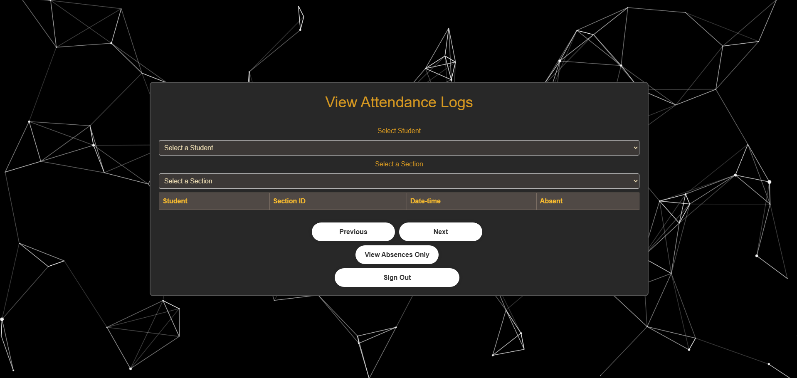
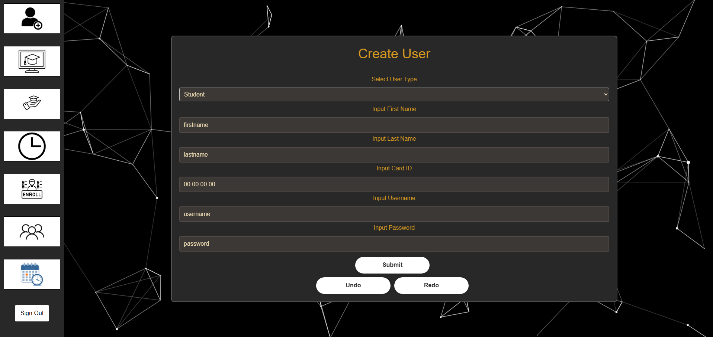

Classroom Attendance App
This project was made using React.js for the frontend, Java Spring Boot for the backend, PostgreSQL for the database, and some Python for the microcontroller elements. The main use-case for this app is for a classroom setting. There would be an RFID scanner located at the entrance to a classroom, and each student would have an ID-card to scan on the scanner. It would then update our database with the time they scanned in, their name, id, current class, and other useful information. There is, then, a client side for student, teacher, and admin use. The teachers would be able to manually enter checkin/checkout times, look at their class attendance, and update accordingly. The student view is a page with their classes all in a column. Clicking one of these classes will send them to another page showing them their attendance for the past school year/semester in that class and whether they were absent, late, or on time. The adminstrator page allows for the assignment of teachers to classes, sections, and rooms. It also enables the assignment of students to classes, and allows updating of attendance as well.
   